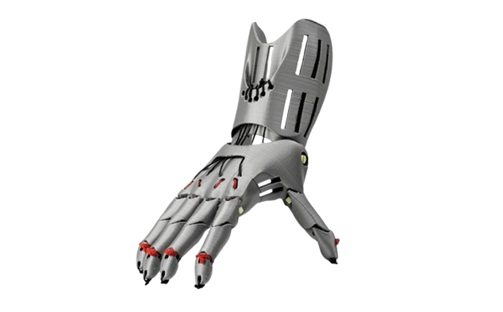

Hephaestus Prosthetics
Hephaestus Prosthetics specializes in creating prosthetic limbs using 3D printing technology. We craft custom prosthetics to enhance the lives of those in need.
Our five-year plan focuses on continuous growth and improvement. In the initial years, our priority is acquiring specialized 3D printers that will enable us to produce prosthetics with high precision and durability. In our third year of operation, we plan to integrate cutting-edge technology that will allow clients to submit photographs of the limb they wish to replace. Utilizing Autodesk's advanced software, we will process these photographs, creating highly accurate and aesthetically pleasing 3D models.
This photo-based modeling will allow us to create prosthetics that look and feel natural, empowering users with confidence and restoring their sense of wholeness. Hephaestus Prosthetics is committed to providing high-quality, accessible prosthetic limbs.